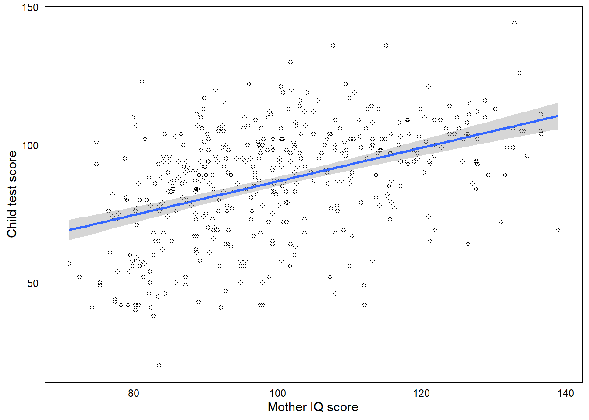
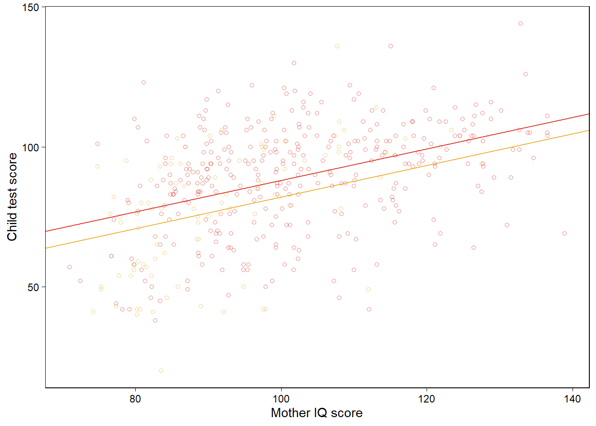
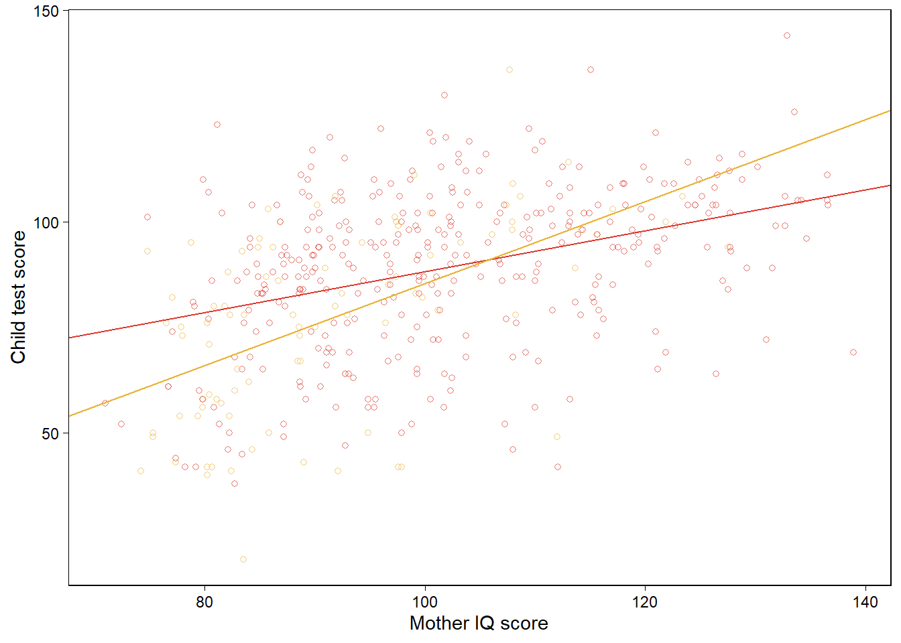

Chapter 11 Assumptions, diagnostics, and model evaluation
이 챕터에서는 회귀모델의 가정과 그 가정들이 합당한지에 대해 평가할 수 있는 진단에 대해 살펴본다.
가장 중요한 가정은 연구대상에 대한 연구자의 지식이며, 가용한 데이터 하나만을 가지고 가정을 직접적으로 검증할 수 없다.
모델의 바탕에 놓은 개념들을 이해하고, 실제 세계와 시뮬레이션된 데이터의 사례들의 맥락 속에서 방법들을 발전시키는 것이 필요하다.
Gelman, Hill, and Vehtari (2020) 은 적합된 모델로부터 예측 시뮬레이션에 기초한 진단을 통해 여러 예측변수를 포함한 회귀모델을 구축하고, 해석하고, 평가하는 데 사용할 일련의 도구들을 제시하고자 한다.
11.1 Assumptions of regression analysis
Gelman, Hill, and Vehtari (2020, 153) 는 중요도 순으로 회귀모델의 가정들을 나열하고 있다.
타당성(Validity)
분석에 사용하는 데이터가 풀고자 하는 연구문제와 들어맞는 것이어야 한다.
결과변수는 우리가 풀고자 하는/관심을 가지는 현상을 정확하게 반영하여 측정하여야 하고, 모델은 모든 적절한 예측변수들을 포함해야 한다는 것을 의미한다.
나아가 모델은 적용되는 사례들에 대해 일반화할 수 있어야 한다.
회귀모델에 어떤 변수들을 넣을지 결정하는 것은 종종 분석에 있어서 가장 까다로운 문제이다.
- 적절한 모든 예측변수들을 포함할 것을 권하지만 과연 어떤 변수가 필수적인지를 결정하는 것과 표준오차가 큰 계수값의 결과를 해석하는 것은 어려운 문제이다.
경험과학 연구에서 사용되는 데이터들은 표본과 모집단 간의 대표성을 확보하기 어렵다. 그러나 이러한 목표를 지향하는 것은 연구자가 신뢰할만한 답을 할 수 있는 혹은 할 수 없는 유형의 연구문제에 대해 보다 정확한 견해를 취할 수 있도록 한다.
대표성(representativeness)
연구자는 데이터에 회귀모델을 적합하여 보다 큰 모집단에 대한 추론을 이끌어내는 데 사용한다.
이때, 회귀계수를 해석하는 데 있어서의 묵시적 가정은 표본이 모집단의 대표적 사례라는 것이다.
우리가 가지고 있는 표본, 데이터는 [모집단에서] 모델에 포함된 예측변수들 \(x_1, x_2, \dots, x_n\)이 주어졌을 때의 결과변수, \(y\)의 분포를 대표하는 것이라는 가정이다.
이러한 가정은 연구자로 하여금 가급적 예측변수들을 더 많이 모델에 포하하여 대표성의 가정을 충족시키고자 하는 유인이 된다.
우리는 모집단을 직접 관측할 수 없기 때문에, 결과변수에 영향을 미칠 것으로 기대되는 변수라면 가능한 한 모델에 포함하고자 하는 합당한 유인을 가지게 되는 것이다.
대표성이란 기존에 표본으로 간주되던 데이터가 아닌 경우에도 동일하게 적용된다.
예를 들어, Section 7.1 에서 16개의 연속적인 선거에 대한 데이터를 다루는 예측 모델을 생각해보자.
그 데이터들은 공통된 모집단으로부터 얻은 표본이 아니지만, 우리는 그 모델을 통해 미래의 선거를 예측하고자 하는 목적을 가진다.
미래의 선거를 예측하기 위해 과거 데이터에 회귀모델을 적합하는 것은 수학적으로 관측된 데이터를 가설적인 초모집단(hypothetical superpopulation)으로부터 무작위로 표집한 하나의 표본으로서의 새로운 결과(데이터)와 동일시하는 것이다.
즉, 오차를 정규오차분포로부터 도출된 무작위 표본으로 간주하는 것이다.
어디까지나 일반화(generalization)으로부터 자유롭지 못하다면, 통계적 표집의 개념을 염두에 두어야 하고, 우리가 추론을 이끌어내고자 하는 묵시적/명시적 모집단에 대한 표본의 대표성의 문제 역시 생각해야만 한다.
가산성과 선형성(additivity and linearity)
수리적으로 선형회귀모델의 가장 중요한 가정은 바로 서로 분리된 예측변수들에 대한 선형 함수의 결정적 요인들(deterministic components)이다: \(y = \beta_0 + \beta_1x_1 + \beta_2x_2 + \cdots .\)
가산성이 위배된다면, 데이터를 변환하거나(만약 \(y = abc\)라면 \(\log y = \log a + \log b + \log c\)) 상호작용을 더하는 것을 고려해볼 수 있다.
선형성이 위배된다면 예측변수들은 단순히 선형적으로 배열되는 것이 아니라 \(1/x\)나 \(\log(x)\)의 형태로 투입될 수 있다.
연구문제들이 비선형적일 수 있지만, 선형회귀모델은 여전히 평균적인 관계 양상을 추정하는 데 있어서 유용할 수 있다.
- 데이터를 더 많이 얻을수록, 그리고 우리가 가진 연구문제가 비선형적일수록, 모델에 비선형성을 반영하려는 노력이 필요해진다.
오차의 독립성(independence of errors)
단순선형회귀모델은 예측선으로부터의 오차는 서로 독립적이라고 가정하며, 이 가정은 시계열/공간/멀티레벨의 조건에서 위배된다.
- 시계열에서는 자기상관(autocorrelation), 공간분석에서는 동시상관(contemporaneous correlation), 멀티레벨에서는 레벨 간 상관 등의 문제로 독립성이 위배될 수 있다.
오차의 등분산(equal variance of errors)
오차의 분산이 동일하지 않을 때, 등분산성(equal variance or homoscedasticity)과 대조되는 개념으로 이분산성(heteroscedasticity)이라고 한다.
오차의 이분산성은 회귀모델을 통해 확률적 예측을 수행할 때 문제가 될 수 있다.
하지만 오차의 이분산성은 예측 그 자체의 정확성에는 영향을 미치지 않는다.
- 즉, 계수값 그 자체를 왜곡시키거나 하는 문제는 아니다.
오차의 이분산성이 존재할 때는 가중치를 부여한 최소자승법을 통해 모델을 더 효율적으로 추정하는 것이 가능하다.
오차의 정규성(normality of errors)
오차항의 분포는 데이터의 개별 관측치들을 예측할 때 중요하다.
회귀선을 추정하고자 할 때, 정규성 가정은 전혀 중요하지 않다.
따라서 Gelman, Hill, and Vehtari (2020) 은 회귀 잔차의 정규성에 대한 진단을 추천하지는 않는다.
그보다 Gelman, Hill, and Vehtari (2020) 은 타당성, 대표성, 가산성, 선형성에 대한 가정을 더 중요하게 생각한다.
보다 중요한 것은 오차항이 예측변수와 독립적이냐 아니냐 하는 것이다.
- 만약 오차항과 예측변수가 서로 상관관계를 가지고 있다면, 이는 결과변수를 예측하기 위한 적절한 예측변수를 모델에 충분히 포함시키지 못한 결과일 수 있기 때문이다.
11.1.1 Failures of the assumptions
가정이 위배되었을 때는 어떻게 하는가?
모델을 기존의 선형회귀모델에서 다른 관계양상을 설명할 수 있는 모델로 확장할 수 있다.
가정이 합당하도록 데이터 또는 모델을 바꾸는 것이 더 단순할 수 있다.
데이터를 목적에 맞게 전처리하거나, 대표성 가정에 더 들어맞도록 예측변수를 추가하거나
비선형성을 포착하기 위한 상호작용항을 더하거나, 예측변수와 결과변수를 변환하여 가산모델(additive model)이 말이 될 수 있도록 할 수 있다.
실질적으로 연구자는 모델의 확장, 데이터 공정(전처리) 등을 복합적으로 적용하고 데이터 너머의 범위(extrapolation; generalizability 개념과 연동해서)를 함께 생각해볼 수 있다).
11.1.2 Causal inference
회귀계수를 인과적으로 해석하고자 한다면 추가적인 가정들이 필요하다. 이 가정들의 내용은 제4부에서 더 자세히 다룬다. 회귀분석의 맥락에서 인과적 추론은 다양한 예측변수들이 특정한 값에 고정되었을 때 나타날 수 있는 결과에 대한 예측의 형태로 간주된다.
회귀계수에 대한 인과적 해석을 부여하는 것에는 근본적인 오류가 존재한다.
회귀모델은 서로 다른 관측치들로부터 얻은 데이터에 적합한다. 그러나 인과적 질문은 어떤 한 사람에게 벌어진 일에 관한 내용이다.
엄밀하게 말하면 회귀모델의 기울기는 서로 다른 관측치의 차이를 비교하며, 평균 차이를 보여주는 것이다.
그 평균적인 경향성은 반드시 특정 개별 관측치가 반드시 그러할 것이라는 의미를 갖지는 않는다.
11.2 Plotting the data and fitted model
그래픽은 데이터를 시각화하고, 모델을 이해하고, 적합된 모델에서는 설명되지 않은 데이터 내의 패턴들을 드러내는 데 유용하다.
11.2.1 Displaying a regression line as a function of one input variable
아이들의 시험성적 예제를 통해 R에서 적합된 모델의 구체적인 정보들을 살펴보도록 하자.
library(rstanarm)
library(rstantools)
fit_2 <- lm(kid_score ~ mom_iq, data = kidiq)
kidiq %>% ggplot(aes(x = mom_iq, y = kid_score)) +
geom_point(shape = 21) +
geom_smooth(method = "lm", se = T) +
labs(x = "Mother IQ score",
y = "Child test score")
Figure 11.1은 개별 관측치들에 대한 산포도와 적합된 회귀모델로부터 추정된 계수값을 사용한 회귀선-\(y = \hat a + \hat x\)을 보여준다.
11.2.2 Displaying two fitted regression lines
11.2.2.1 Model with no interaction
두 개의 예측변수를 가진 모델의 경우, 우리는 각 예측변수와 결과변수에 대해 그릴 수 있다.
fit_3 <- lm(kid_score ~ mom_hs + mom_iq, data=kidiq)
b_hat <- coef(fit_3)
kidiq %>%
mutate(colors = if_else(mom_hs==1, "black", "gray")) %>%
ggplot(aes(x = mom_iq, y = kid_score, color = colors)) +
geom_point(shape = 21, alpha = 2/3, show.legend = F) +
scale_color_manual(values = futurevisions::futurevisions("mars")) +
geom_abline(intercept = b_hat[1] + b_hat[2],
slope = b_hat[3],
color = futurevisions::futurevisions("mars")[1]) +
geom_abline(intercept = b_hat[1],
slope = b_hat[3],
color = futurevisions::futurevisions("mars")[2]) +
labs(x = "Mother IQ score", y = "Child test score")
mom_hs가 연속형 예측변수라면 우리는 kid_score와 mom_iq 간의 관계를 mom_hs의 서로 다른 두 값에 따른 적합된 회귀선으로 비교하여 보여줄 수 있다.
11.2.2.2 Model with interaction
상호작용항을 포함한 모델에 대해 앞서와 동일한 플롯을 그릴 수 있다. 이 경우 다른 점은 두 회귀선이 서로 다른 기울기를 가지게 된다는 것이다.
fit_4 <- lm(kid_score ~ mom_hs + mom_iq + mom_hs:mom_iq, data=kidiq)
b_hat <- coef(fit_4)
kidiq %>%
mutate(colors = if_else(mom_hs==1, "black", "gray")) %>%
ggplot(aes(x = mom_iq, y = kid_score, color = colors)) +
geom_point(shape = 21, alpha = 2/3, show.legend = F) +
scale_color_manual(values = futurevisions::futurevisions("mars")) +
geom_abline(intercept = b_hat[1] + b_hat[2],
slope = b_hat[3] + b_hat[4],
color = futurevisions::futurevisions("mars")[1]) +
geom_abline(intercept = b_hat[1],
slope = b_hat[3],
color = futurevisions::futurevisions("mars")[2]) +
labs(x = "Mother IQ score", y = "Child test score")
11.2.3 Displaying uncertainty in the fitted regression
Section 9.1에서 추정된 회귀계수에서 어떻게 사후 시뮬레이션이 불확실성을 보여주는지에 대해서 논의하였다. 여기에서는 어떻게 시뮬레이션을 통해 추론의 불확실성을 시각적으로 보여줄 수 있는지를 살펴본다. 다음과 같은 단순한 모델을 생각해보자:
fit_2 <- lm(kid_score ~ mom_iq, data=kidiq)회귀선에 대한 불확실성을 보여주는 10번의 시뮬레이션의 적합된 회귀선을 그려보자. lm 함수를 쓰면 시뮬레이션 값을 가지지 않기 때문에 다변량 무작위 정규분포로부터 계수값에 대한 시뮬레이션을 10개 추출해서 다음과 같이 그래프를 그렸다.
library(mvtnorm)
sims_2 <- rmvnorm(10, mean = coef(fit_2), sigma = vcov(fit_2))
n_sims_2 <- nrow(sims_2)
beta_hat_2 <- apply(sims_2, 2, median)
kidiq %>% ggplot(aes(x = mom_iq, y = kid_score)) +
geom_point(shape = 21) +
geom_abline(intercept = sims_2[1,1],
slope = sims_2[1,2], color = "gray") +
geom_abline(intercept = sims_2[2,1],
slope = sims_2[2,2], color = "gray") +
geom_abline(intercept = sims_2[3,1],
slope = sims_2[3,2], color = "gray") +
geom_abline(intercept = sims_2[4,1],
slope = sims_2[4,2], color = "gray") +
geom_abline(intercept = sims_2[5,1],
slope = sims_2[5,2], color = "gray") +
geom_abline(intercept = sims_2[6,1],
slope = sims_2[6,2], color = "gray") +
geom_abline(intercept = sims_2[7,1],
slope = sims_2[7,2], color = "gray") +
geom_abline(intercept = sims_2[8,1],
slope = sims_2[8,2], color = "gray") +
geom_abline(intercept = sims_2[9,1],
slope = sims_2[9,2], color = "gray") +
geom_abline(intercept = sims_2[10,1],
slope = sims_2[10,2], color = "gray") +
geom_abline(intercept = beta_hat_2[1],
slope = beta_hat_2[2], color = "black") +
labs(x = "Mother IQ score",
y = "Child test score")Figure 11.1: Data and regression of child’s test score on maternal IQ, with the solid line showing the fitted regression model and light lines indicating uncertainty in the fitted regression.
11.2.4 Displaying using one plot for each input variable
회귀모델이 엄마의 고등학교 수료 여부에 대한 더미변수를 포함하고 있다고 해보자.
fit_3 <- lm(kid_score ~ mom_hs + mom_iq, data=kidiq)
sims_3 <- rmvnorm(10, mean = coef(fit_3), sigma = vcov(fit_3))
n_sims_3 <- nrow(sims_3)
beta_fit_3 <- coef(fit_3)
beta_hat_3 <- apply(sims_3, 2, median)이 시뮬레이션 결과를 바탕으로 Figure 11.2를 그려보자.
Figure 11.2: Data and regression of child’s test score on maternal IQ and high school completion, shown as a function of each of the two input variables with the other held at its average value. Light lines indicate uncertainty in the regressions. Values for mother’s high school completion have been jittered to make the points more distinct.
11.2.5 Plotting the outcome vs. a continuous predictor
주어진 처치변수 중 더미변수인 \(z\)와 처치 전 연속형 예측변수인 \(x\)가 주어졌다고 할 때, 연속형 결과변수 \(y\)를 갖는 모델을 다음과 같이 구축했다고 하자.
\[ y = a + bx + \theta z + error \]
그리고 이제 가상의 데이터를 시뮬레이션해보자.
set.seed(1234)
n <- 100; a <- 1; b <- 2
theta <- 5 ;sigma <- 2
data_1 <-
tibble(
x = runif(n, min = 0, max = 1),
z = rep(0:1, n / 2) %>% sample(),
y = a + b * x + theta * z + rnorm(n, mean = 0, sd = sigma)
)
fit_1 <- lm(y ~ x + z, data = data_1)
lines <-
tribble(
~z, ~intercept, ~slope,
0, coef(fit_1)[["(Intercept)"]], coef(fit_1)[["x"]],
1, coef(fit_1)[["(Intercept)"]] + coef(fit_1)[["z"]], coef(fit_1)[["x"]]
)
data_1 %>%
ggplot(aes(x, y, color = factor(z))) +
geom_point(shape = 21) +
geom_abline(
aes(slope = slope, intercept = intercept, color = factor(z)),
data = lines
) +
facet_wrap(~factor(z)) +
scale_color_manual(values=futurevisions::futurevisions("mars")) +
theme(legend.position = "bottom") +
labs(
x = "Pre-treatment predictor, x",
y = "Outcome, y",
color = "Treatment"
)Figure 11.3: From a hypothetical study of a pre-treatment variable \(x\), treatment indicator \(z\), and outcome \(y\): data and fitted regression line plotted separately for control and treatment groups.
회귀모델을 적합하고 데이터와 적합된 모델을 그래프로 나타내보자. Figure 11.3은 각각 연속형 \(x\), 이산형 \(z\)에 대해서 서로 다른 \(z\)값에서의 \(y\)-\(x\)의 관계를 보여준다.
11.2.6 Forming a linear predictor from a multiple regression
이전의 예제를 확장해서 \(k\)개의 사전 처치 예측변수들-\(x_k, k = 1,\dots,K\)에 대한 처치 더미변수 \(z\)의 경우를 생각해보자.
\[ y = b_0 + b_1x_1 + \cdots + b_Kx_K + \theta_z + \text{error}. \]
이 데이터의 경우에는 어떻게 시각화를 해줄 수 있을까?
다른 사전 예측변수들의 값을 평균으로 고정시켜둔 상태에서 \(z=0\)일 때와 \(z=1\)일 때에 대해 \(y\)-\(x_K\) 관계를 시각화할 수 있다.
통제집단을 \((z=0)\)로, 처치 집단을 \((z=1)\)인 집단으로 상정하여 결과변수 \(y\)에 대한 선형예측, \(\hat y = \hat b_0 \hat b_1 x_1 + \cdots + \hat b_Kx_K + \hat \theta z\)를 각각 두 집단에서 추정하는 방식이 있다.
- 먼저 페이크데이터를 이용해 \(K= 10\)인 예측변수들과 상수항을 가지는 회귀모델을 구축, 시뮬레이션을 해보자.
set.seed(1234)
n <- 100; k <- 10; a <- 1; b <- 1:k
theta <- 5; sigma <- 2
data_2 <-
tibble(
X = matrix(runif(n * k, min = 0, max = 1),
nrow = n, ncol = k),
z = rep(0:1, n / 2) %>% sample(),
y = as.double(a + X %*% b + theta * z +
rnorm(n, mean = 0, sd = sigma))
)
fit_2 <- lm(y ~ X + z, data = data_2)
data_2 %>%
mutate(pred = predict(fit_2)) %>%
ggplot(aes(pred, y, color = factor(z))) +
geom_point(show.legend = F) +
geom_abline(slope = 1, intercept = 0) +
coord_fixed() +
facet_wrap(~factor(z)) +
scale_color_manual(values = futurevisions::futurevisions("mars")) +
scale_y_continuous(breaks = scales::breaks_width(10)) +
labs(
title = "Outcome vs. predicted value",
x = "Predicted value of y",
y = "Outcome, y",
color = "Treatment"
)Figure 11.4: From a hypothetical study of 10 pre-treatment variables \(X\), treatment indicator \(z\), and outcome \(y\): Outcome plotted vs. fitted linear predictor \(\hat y\) (so that the fitted regression line is by definition \(y = \hat y\)), plotted separately for control and treatment groups.
Figure 11.4는 예측된 \(y\)와 관측된 \(y\) 간의 관계를 나타낸다. 오차항 \(u\)는선형 예측값, \(E(y)\)에 의해 정의된다. 만약 오차가 크지 않다면 관측된 \(y\)와 예측값 \(\hat y\)는 동일 선상에 놓이게 될 것이다.
11.3 Residual plots
데이터와 적합된 회귀선을 그래프로 시각화한다면, 우리는 데이터와 모델로 인한 기대값 간의 차이를 살펴보는 것으로 적합이 잘 되었는지를 평가할 수 있다: 그 차이가 바로 잔차(residuals)이다.
\[ r_i = y_i - X_i\hat \beta. \]
잔차를 구해보자: \(r_i = y_i - (\hat b_0 + \hat b_1 x_{i1} + \cdots + \hat b_K x_{iK} + \hat \theta z_i)\).
만약 모델이 정확하다면 잔차를 그래프로 나타냈을 때, 우리는 대략적으로 무작위 분포된 잔차의 분포를 볼 수 있게 된다. Figure 11.5를 보자.
set.seed(1234)
data_2 %>%
mutate(
pred = predict(fit_2),
resid = residuals(fit_2)
) %>%
ggplot(aes(pred, resid, color = factor(z))) +
geom_hline(yintercept = 0, color = "white", size = 2) +
geom_point(show.legend = F) +
facet_wrap(~factor(z)) +
geom_hline(yintercept = 0) +
scale_color_manual(values = futurevisions::futurevisions("mars")) +
theme(legend.position = "bottom") +
labs(
title = "Residual vs. predicted value",
x = "Predicted value of y",
y = "Residual, r",
color = "Treatment"
)Figure 11.5: Continuing Figure 11.4, the residual, \(r = y- \hat y\), vs. the fitted linear predictor \(\hat y\), plotted separately for control and treatment groups.
Figure 11.6은 시험성적 예제에서 엄마의 IQ로 아이의 시험성적을 회귀분석한 데 대한 잔차 그래프를 보여준다.
Figure 11.6은 강한 패턴을 보여주지는 않는다.
잔차 그래프는 모델적합도와 관련된 체계적 문제들을 확인할 수 있게 한다.
Figure 11.6은 모델로부터 구한 오차가 평균을 0으로 하며 예측변수와 독립적이라는 것을 보여준다.
fit_2 <- lm(kid_score ~ mom_iq, data = kidiq)
kidiq %>%
mutate(resid = residuals(fit_2),
upper = resid + sd(resid),
lower = resid - sd(resid)) -> newkids
newkids %>%
ggplot(aes(mom_iq, resid)) +
geom_hline(yintercept = 0, color = "black") +
geom_hline(yintercept = mean(newkids$upper),
color = "black", linetype = 2) +
geom_hline(yintercept = mean(newkids$lower),
color = "black", linetype = 2) +
geom_point() +
scale_x_continuous(breaks = scales::breaks_width(10)) +
labs(x = "Mother IQ score", y = "Residual")Figure 11.6: Residual plot for child test score data when regressed on maternal IQ, with dotted lines showing \(\pm 1\) standard-deviation bounds. The residuals show no striking patterns.
11.3.1 Using fake-data simulation to understand residual plots
모델, \(y = X\beta + \epsilon\)으로부터 페이크데이터를 시뮬레이션했다고 했을 때, 모델을 시뮬레이션된 데이터에 재적합하고 계수 \(\beta\)에 대한 68%, 95%의 구간을 확인할 수 있다.
11.3.2 A confusing choice: plot residuals vs. predicted values, or residuals vs. observed values?
실제 데이터에 대한 단순한 모델을 적합해보고, 기초통계학 수업(scores)에서 중간고사 성적으로 기말시험 성적을 예측해보자.
file_scores <- here::here("data/ros-master/Introclass/data/gradesW4315.dat")
scores <-
file_scores %>%
read.table(header = TRUE) %>%
as_tibble()
fit_1 <- lm(final ~ midterm, data = scores)
summary(fit_1)##
## Call:
## lm(formula = final ~ midterm, data = scores)
##
## Residuals:
## Min 1Q Median 3Q Max
## -36.832 -6.573 2.761 8.880 29.055
##
## Coefficients:
## Estimate Std. Error t value Pr(>|t|)
## (Intercept) 64.5048 16.9778 3.799 0.000394 ***
## midterm 0.7036 0.2144 3.281 0.001888 **
## ---
## Signif. codes: 0 '***' 0.001 '**' 0.01 '*' 0.05 '.' 0.1 ' ' 1
##
## Residual standard error: 14.75 on 50 degrees of freedom
## Multiple R-squared: 0.1772, Adjusted R-squared: 0.1607
## F-statistic: 10.77 on 1 and 50 DF, p-value: 0.001888sigma(fit_1)## [1] 14.75195이제 계수들을 시뮬레이션해서 평균 예측값인 \(y_i^{\text{pred}}\)와 잔차 \(y_i - y_i^{\text{pred}}\)를 구해보자.
sims <- rmvnorm(1000, mean = coef(fit_1), sigma =vcov(fit_1))
predicted <- predict(fit_1)
resid <- scores$final - predictedFigure 11.7은 모델로부터 얻은 잔차를 두 가지 서로 다른 방식으로 보여준다.
예측값과 잔차 간의 관계를 보여주는 것
관측값과 잔차 간의 관계를 보여주는 것
scores %>%
mutate(
pred = predict(fit_1),
resid = residuals(fit_1)
) -> scores
scores %>%
ggplot(aes(pred, resid)) +
geom_hline(yintercept = 0, color = "black") +
geom_point() +
scale_x_continuous(breaks = scales::breaks_width(5)) +
labs(
title = "Residual vs. predicted value",
x = "Predicted value",
y = "Residual"
) -> panelscore1
scores %>%
ggplot(aes(final, resid)) +
geom_hline(yintercept = 0, color = "black") +
geom_point() +
scale_x_continuous(breaks = scales::breaks_width(10)) +
labs(
title = "Residual vs. observed value",
x = "Observed value",
y = "Residual"
) -> panelscore2
panelscore1 + panelscore2 + plot_layout(ncol = 2)Figure 11.7: From a model predicting final exam grades from midterms: plots of regression residuals versus predicted and versus observed values. The left plot looks reasonable but the right plot shows strong patterns. How to understand these? An exploration using fake data (see Figure 11.8) shows that, even if the model were correct, we would expect the right plot to show strong patterns. The plot of residuals versus observed thus does not indicate a problem with the model.
하지만 Figure 11.7b는 문제의 소지가 있어보인다. 왜냐하면 잔차 역시도 원래는 관측된 값에 포함된-우리가 관측하지 못한 변동성일 것이기 때문에 관측값과 잔차는 어떻게든 일정한 체계적 관계를 맺기 때문이다.
11.3.3 Understanding the choice using fake-data simulation
주어진 모델 추정량을 바탕으로 계수값과 표준편차를 설정하고 실제 중간고사 성적을 예측변수로 기말고사 성적을 페이크데이터로 시뮬레이션해서 만들어보자.
a <- 64.5; b <- 0.7
sigma <- 14.8
n <- nrow(scores)
scores$final_fake <- a + b*scores$midterm + rnorm(n, 0, sigma)페이크데이터에 회귀모델을 적합하고 예측값과 잔차를 컴퓨팅해보자.
fit_fake <- lm(final_fake ~ midterm, data=scores)
sims <- rmvnorm(1000, mean = coef(fit_fake), sigma = vcov(fit_fake))
predicted_fake <- colMeans(sims[,1] + sims[,2] %*% t(scores$midterm))Figure 11.8: From fake data: plots of regression residuals versus (a) predicted or (b) observed values. Data were simulated from the fitted family of regression models, and so we know that the pattern on the right does not represent any sort of model failure. This is an illustration of the use of fake data to evaluate diagnostic plots. Compare to the corresponding plots of real data in Figure 11.7.
Figure 11.8은 resid_fake 대 predicted_fake와 관측된 final_fake 간의 관계를 보여주는 플롯이다. 우리는 이 플롯을 보고 모델을 평가할 수 있다(좌측을 보고).
11.4 Comparing data to replications from a fitted model
시뮬레이션은 여러 용도로 사용할 수 있다"
가설적인 확률 모델의 함의를 탐색(Section 5.1)
데이터에 적합된 통계모델의 함의를 탐색(Section 10.6)
알려진 모수의 진실값에 대한 추정량들을 비교함으로서 통계절차의 특성을 연구(Section 7.2와 11.3)
사후 예측분포 확인(posterior predictive checking): 주어진 적합된 모델로 재현된 데이터셋으로 시뮬레이팅한 이후 관측된 데이터와 비교하는 것
11.4.1 Example: simulation-based checking of a fitted normal distribution
모델 적합도(model fit)를 확인하기 위한 가장 기초적인 방법은 재현된 데이터셋을 제시하고 실제 데이터와 비교하는 것이다.
Figure 11.9는 Simon Newcomb가 1882년에 광속을 측정하기 위한 실험의 일부로 사용된 데이터를 보여준다. 먼저 예측변수 하나 없이 선형회귀모델을 적합해 데이터에 대한 정규분포를 적합해본다.
file_newcomb <- here::here("data/ros-master/Newcomb/data/newcomb.txt")
newcomb <- read_table2(file_newcomb)
fit <- lm(y ~ 1, data = newcomb)그 다음으로는 적합된 모델로부터 모수를 시뮬레이션하는 것이다. 이 예제에서는 상수항 \(\beta_0\)와 잔차의 표준편차 \(\sigma\)를 얻을 수 있다.
fit <- stan_glm(y ~ 1, data=newcomb, refresh = 0)
sims <- as.matrix(fit)
n_sims <- nrow(sims)이제 시뮬레이션을 해보자.
n <- length(newcomb$y)
y_rep <- array(NA, c(n_sims, n))
for (s in 1:n_sims) {
y_rep[s,] <- rnorm(n, sims[s,1], sims[s,2])
}posterior_predict() 함수로 재현된 데이터셋에 대한 예측값의 사후분포를 확인해보자.
y_rep <- posterior_predict(fit)11.4.1.1 Visual comparison of actual and replicated datasets
Figure 11.9는 Simon Newcomb’s 데이터의 분포를 보여준다.
Figure 11.9: Histogram of Simon Newcomb’s measurements for estimating the speed of light, from Stigler (1977). The data represent the amount of time required for light to travel a distance of 7442 meters and are recorded as deviations from 24 800 nanoseconds.
Figure 11.10은 무작위로 표집된 데이터셋 중 20개의 관측치에 대한 플롯을 보여준다.
Figure 11.10: Twenty replications, \(y^{rep}\), of the speed-of-light data from the predictive distribution under the normal model; compare to observed data, \(y\), in Figure 11.9. Each histogram displays the result of drawing 66 independent values \(y_{i}^{rep}\) from a common normal distribution with mean and standard deviation \((\mu, \sigma)\) simulated from the fitted model.
실제 데이터와 재현 데이터 간에는 명확한 체계적 차이가 나타난다.
11.4.1.2 Checking model fit using a numerical data summary
데이터를 보여주는 것은 모델 적합도를 확인하기 위한 보다 집중된 검정 통계량을 제안할 수 있다. 검정 통계량 \(T(y)\)는 데이터의 최소값과 같으며 이를 바탕으로 우리는 각각의 재현된 데이터셋에 대한 $T(y^{})를 계산하게 된다.
test <- function(y) {
min(y)
}
test_rep <- apply(y_rep, 1, test)재현된 데이터들의 최소값들의 히스토그램을 그리고 관측 데이터의 최소값을 수직선으로 나타내보자.
Figure 11.11: Smallest observation of Newcomb’s speed-of-light data (the vertical line at the left of the graph), compared to the smallest observations from each of 20 posterior predictive simulated datasets displayed in Figure 11.10.
이 그래프는 시뮬레이션으로 만든 재현데이터 각각의 최소관측값이 Newcomb의 관측값 중 가장 작은값에 비해 훨씬 더 크다는 것을 보여준다.
11.5 Example: predictive simulation to check the fit of a time-series model
예측 시뮬레이션은 각 시점의 분포가 이전 시점의 데이터에 의해 영향을 받는 시계열 모델에서 더 복잡하다. 여기서는 단순자기회귀(autoregressive) 모델로 설명한다.
11.5.1 Fitting a first-order autoregression to the unemployment series
Figure 11.13은 1947년부터 2004년 사이의 미국 내 연간 실업률에 대한 시계열 자료를 보여준다. 얼마나 데이터가 1계 자기회귀에 따라 잘 적합되는지, 즉 이전 연도의 실업률에 대한 회귀모델을 분석해본다.
n <- nrow(unemp)
unemp$y_lag <- c(NA, unemp$y[1:(n-1)])
fit_lag <- stan_glm(y ~ y_lag, data=unemp, refresh = 0)
print(fit_lag)## stan_glm
## family: gaussian [identity]
## formula: y ~ y_lag
## observations: 69
## predictors: 2
## ------
## Median MAD_SD
## (Intercept) 1.3 0.5
## y_lag 0.8 0.1
##
## Auxiliary parameter(s):
## Median MAD_SD
## sigma 1.0 0.1
##
## ------
## * For help interpreting the printed output see ?print.stanreg
## * For info on the priors used see ?prior_summary.stanreg이 결과는 생각보다 데이터에 대한 모델의 적합도에 대해 많은 정보를 알려주지 않는다. 이 적합을 분석하기 위해서 적합된 모델로부터 재현 데이터를 시뮬레이션한다.
11.5.2 Simulating replicated datasets
sims <- as.matrix(fit_lag)
n_sims <- nrow(sims)시뮬레이션된 시계열 데이터를 채워넣기 위한 재현 데이터셋의 용기(container)를 만든다.
y_rep <- array(NA, c(n_sims, n))
for (s in 1:n_sims){
y_rep[s,1] <- y[1]
for (t in 2:n){
y_rep[s,t] <- sims[s,"(Intercept)"] +
sims[s,"y_lag"] * y_rep[s,t-1] +
rnorm(1, 0, sims[s,"sigma"])
}
}이렇게 얻은 시뮬레이션 결과는 posterior_prect() 함수로 분석을 수행할 수 없는데 시계열 자료에서는 각 연도를 그 전년도에 조건지어서 시뮬레이션을 해야하기 때문이다.
11.5.3 Visual and numerical comparisons of replicated to actual data
첫째로 시뮬레이션된 데이터셋을 시각화하고 실제 데이터와 비교할 수 있다. 실제 데이터를 시각화해보자.
Figure 11.12: Time series of U.S. annual unemployment rates from 1947 to 2016. We fit a first-order autoregression to these data and then simulate several datasets, shown in Figure 11.14, from the fitted model.
20개의 시뮬레이션 결과는 서로 다른 패턴들을 보여준다. 자기회귀모델은 시계열을 서로 다른 측면들을 명확하게 보여줄 수 있다.
## Error in validate_data(data, if_missing = environment(formula)): object 'unemployment' not found## Error in seq(min(unemployment$year), max(unemployment$year)): object 'unemployment' not found## Error in eval(expr, envir, enclos): object 'unemployment' not found## Error in eval(expr, envir, enclos): object 'years' not found## Error in double(length = n_years): object 'n_years' not found## Error in UseMethod("filter"): no applicable method for 'filter' applied to an object of class "c('matrix', 'array', 'double', 'numeric')"위의 시계열 시뮬레이션 시각화 결과를 보면 재현된 데이터들은 원 데이터에서 보여주지 않는 패턴을 보여준다. 바로 실제 시계열 자료에서 나타나는 보다 부드러운 패턴보다 위아래로 단기의 등폭이 더 심하다는 것이다.
이러한 차이를 수량화해주기 위해서, 실업률의 감소에 뒤이어 바로 증가가 있었던 해의 빈도를 세는 검정통계량을 정의해보고 추정할 수 있다.
test <- function(y){
n <- length(y)
y_lag <- c(NA, y[1:(n-1)])
y_lag_2 <- c(NA, NA, y[1:(n-2)])
sum(sign(y-y_lag) != sign(y_lag-y_lag_2), na.rm=TRUE)
}
test_y <- test(unemp$y)
test_rep <- apply(y_rep, 1, test)
table(test_rep)## test_rep
## 0 5 6 8 9 10 11 12 13 14 15 16 17 18 19 20 21 22 23 24 25
## 9 3 4 9 3 7 6 5 9 8 15 20 15 32 56 67 83 146 156 173 213
## 26 27 28 29 30 31 32 33 34 35 36 37 38 39 40 41 42 43
## 279 321 346 326 319 303 297 230 169 114 102 67 34 25 11 8 6 4실제로 관측된 시계열 자료에서는 26번의 변동이 포착된다. 앞서 수행한 n_sims = 4000인 시뮬레이션에서 99%의 데이터가 26번 이상의 변동을 가지고 있고, 80% 정도에 해당하는 시뮬레이션 데이터들이 [31, 41] 사이에 변동을 보인다. 즉, 모델이 데이터의 특성을 잘 포착하지 못하고 있다는 것을 의미한다.
이 검정은 자기회귀를 기각하지 못하지만, 데이터의 특정한 측면을 보여준다는 데 의의가 있다.
단순히 회귀모델을 적합하는 것에서는 확인할 수 없는 데이터의 경향성에 대한 정보를 제공하는 것이다.
실제 시계열 자료의 변동은 모델에서 기대되는 것보다 훨씬 덜 빈번한 양상을 보였다.
이러한 시각화 노력을 통해 우리는 관측자료와 재현자료(시뮬레이션) 간 체계적 차이를 더 쉽게 포착할 수 있다.
11.6 Residual standard deviation \(\sigma\) and explained variance \(R^2\)
잔차의 표준편차, \(\sigma\)는 잔차, \(r_i = y_i - X_i\hat \beta\)를 요약해서 보여준다.
표준편차의 크기는 결과변수의 총 변동량에 비교했을 때 좀 더 중요한 의미를 가진다. 모델의 적합도는 \(\sigma\)를 요약하는 것으로 보여줄 수 있다.
- 잔차의 표준편차가 작을수록 더 좋은 모델 적합도를 보인다.
그리고 \(R^2\)는 결과변수의 총 변동량에 비해 모델에 의해서 설명되는 분산을 보여준다.
- 설명되지 않은 분산은 \(\sigma^2\)로 나타내고, 만약 데이터의 표준편차를 \(s_y\)라고 한다면 \(R^2\)다음과 같이 나타낼 수 있다.
\[ R^2 = 1 - (\hat \sigma^2/s^2_y) \]
- 모델이 최소자승법을 통해 적합되었다면 아래와 같이 설명된 분산을 직접적으로 표현할 수 있다.
\[ R^2 = V^n_{i=1}\hat y_i/s^2_y \] 이때, \(\hat y_i = X_i\hat \beta\)이며 \(V\)는 표본 분산을 나타낸다.
\[ V^n_{i=1}z_i = \frac{1}{n-1}\sum^{n}_{i=1}(z_i-\bar z)^2, \text{for any vector } z\text{ of length }n. \]
\(R^2\)를 이해하기 위해서, 하나의 예측변수를 가진 단순회귀모델을 생각해보자: \(\hat y = \hat a + \hat b x\).
회귀선이 거의 수평선인 \(\bar y\)와 거의 같다고 해보자. 그렇다면 모든 \(i\)에 대해서 \(\hat a + \hat b x_i \approx \bar y\)가 된다. 이 경우에 개별 잔차는 \(y_i - (\hat a + \hat b x_i)\)로 계산할 수 있고, 이 결과는 거의 \(y_i - \bar y\)와 같게 된다. 따라서 \(\sigma \approx s_y\)가 된다. 그러므로 \(R^2 \approx 0\)이라고 할 수 있고, 이는 회귀선이 실제로 \(y\)의 변동을 설명하는 것이 거의 없다는 의미이다. 이 경우, 추정된 절편 \(\hat a\)는 대략적으로 \(\bar y\)이며, 추정된 기울기 \(\hat b\)는 거의 0에 가깝게 된다.
이번에는 또 다른 시나리오, 회귀선이 거의 완벽하게 모든 관측치를 지나는 경우를 생각해보자. 따라서 이 경우에 잔차는 거의 0이 된다. 그렇다면 \(\sigma\)는 0에 가까워지고 \(s_y\)는 훨씬 더 작아지며, \(R^2 \approx 1\)이 된다. 즉, 회귀선은 실질적으로 \(y\)의 모든 변동성을 설명한다는 것이며, 일반적으로 \(R^2\)가 거의 1에 가까워질수록 모델 적합도가 더 나아진다고 할 수 있다.
\(R^2\)에 대해서 알아야할 것들이 몇 가지 있다.
\(R^2\)는 회귀모델의 \(x\)나 \(y\)를 어떠한 상수와 곱한다고 해서 변화하지는 않는다.
- 따라서 예측변수의 단위를 변화시키고 싶거나 혹은 해석에 변화를 주더라도 데이터에 대한 모델 적합의 요약 결과를 변화시키기는 못한다.
하나의 예측변수를 가진 최소자승 회귀모델에서 \(R^2\)는 \(x\)와 \(y\) 간의 상관관계의 제곱 값과 동일하다.
\(n-k\), 데이터 관측치의 개수에서 추정된 계수값을 뺀 것을 잔차 추정에 대한 자유도(degree of freedom)라고 한다.
- 빈도주의적 접근법에서 추정하는 회귀모델에서는 \(k\)는 반드시 \(n\)보다 작아야 한다. 그렇지 않으면 데이터는 완벽하게 적합되고 회귀모델의 오차를 전혀 추정할 수 없게 된다.
11.6.1 Difficulties in interpreting residual standard deviation and explained variance
회귀모델에서 우리가 주로 관심을 가지고 있는 것은 변동성을 보여주는 \(\epsilon\)보다 모델의 결정주의적인 요인들-\(X\beta\)이다. 그러나 잔차의 표준편차도 살펴볼 필요가 있다. 동일한 \(\hat a _ \hat b x\)를 가지고 있더라도 다른 \(\sigma\) 값에 따라서 전달하는 함의가 크게 다를 수 있기 때문이다.
예를 들어, 회귀선은 동일하더라도 \(\hat \sigma = 0.17\)인 데이터와 \(\hat \sigma = 0.32\)인 데이터를 놓고 보면 \(\hat \sigma = 0.32\)인 데이터가 훨씬 관측치들이 넓게 분포하고 있는 것을 확인할 수 있다(Gelman, Hill, and Vehtari 2020: 169).
마찬가지로 회귀선이 동일하더라도 \(R^2=0.3\)인 경우와 \(R^2=0.1\)인 경우도 전자가 데이터가 회귀선에 더 접하는 면이 많게 분포되어 모델이 \(y\)의 변동량을 더 많이 설명하는 차이가 있다는 것을 알 수 있다(Gelman, Hill, and Vehtari 2020: 169).
11.6.2 Bayesian \(R^2\)
\(R^2\)는 적합된 모델의 점추정량에 따라 정의된다. 하지만 베이지언 추론에서는 항상 불확실성에 대해 고민하기 때문에, \(R^2\)에 대한 접근 방식이 좀 다르다.
먼저 베이지언 \(R^2\)란 단순하게 베이지언 예측, \(X\hat\beta\)를 만들기 위해 \(\beta\)에 대한 사후평균추정량을 사용해서 잔차의 표준편차를 컴퓨팅하고 그것을 \(R^2 = 1-(\hat \sigma^2/s^2_y)\)에 대입하거나 평균 예측값의 표준편차를 컴퓨팅해 \(R^2 = V^n_{i=1}\hat y_i/s^2_y\)에 대입하여 베이지언 \(R^2\)을 구할 수 있다.
이 방식에는 두 가지 문제점이 있다:
베이지언 컴퓨테이션에서 점추정량을 사용하기 위한 불확실성을 놓쳐버리고 만다.
두 공식 중 두 번째 공식은 때로 \(R^2\)가 1보다 큰 결과를 산출할 수 있다.
적합된 모델이 종속변수의 100% 이상을 설명한다는 것은 상식적으로 말이 되지 않는다.
첫 번째 공식의 경우 추정된 잔차의 분산이 실제 데이터 분산보다 커서 추정된 \(R^2\)가 0보다 작아질 수 있다는 문제점이 존재한다.
![Simple example showing the challenge of defining $R^2$ for a fitted Bayesian model. (a) Data, least squares regression line, and fitted Bayes line, which is a compromise between the prior and the least squares fit. The standard deviation of the fitted values from the Bayes model (the open circles on the line) is greater than the standard deviation of the data, so the usual definition of $R^2$ will not work. (b) Posterior mean fitted regression line along with 20 draws of the line from the posterior distribution. We compute Bayesian $R^2$ by evaluating formula (11.5) for each posterior simulation draw and then taking the median.](regression-ghv_files/figure-html/unnamed-chunk-442-1.png)
Figure 11.13: Simple example showing the challenge of defining \(R^2\) for a fitted Bayesian model. (a) Data, least squares regression line, and fitted Bayes line, which is a compromise between the prior and the least squares fit. The standard deviation of the fitted values from the Bayes model (the open circles on the line) is greater than the standard deviation of the data, so the usual definition of \(R^2\) will not work. (b) Posterior mean fitted regression line along with 20 draws of the line from the posterior distribution. We compute Bayesian \(R^2\) by evaluating formula (11.5) for each posterior simulation draw and then taking the median.
이 예제는 단순한 \(R^2\)가 부적절할 수도 있다는 것을 보여준다. \(y = \beta_0 + \beta_1 x + \text{error}\)라는 모델이 있고, \(\beta\)에 대한 강한 사전정보가 존재하지만 그에 비해 관측치의 개수는 적다고 하자.
먼저 최소자승회귀모델로 그린 회귀선은 \(R^2=0.77\)의 모델 적합도를 갖는다고 하자.
베이지안 모델적합은 강한 사전정보로 \(\beta_0\sim N(0, 0.2)\)이며, \(\beta_1\sim N(1, 0.2)\)라고 하자.
베이지안 모델로부터 적합된 값의 표준편차는 1.3이며 데이터의 표준편차는 1.08이다.
따라서 이 경우에 \(R^2 > 1\)이 된다.
\(R^2\)를 데이터의 예측분포를 바탕으로 나타내면 다음과 같다:
\[ \text{alternative }R^2 = \frac{\text{Explained variance}}{\text{Explained variance + Residual variance}} = \frac{\text{var}_\text{fit}}{\text{var}_\text{fit}+\text{var}_\text{res}} \]
첫 번째 통계량은 새로운 데이터로부터 얻은 기대값의 분산이고 두 번째 항은 새로운 잔차로부터 얻은 기대분산이다.
베이지언 추론에서 우리는 일련의 사후 시뮬레이션으로 추출한 결과들을 가지고 작업한다. 각각의 시뮬레이션 추출된 표본 \(s\)에 대해서 예측값 \(\hat y_i^s = X_i\beta^s\)와 잔차의 분산 \(\sigma^2_s\)의 벡터, 그리고 설명변동량의 비율을 컴퓨팅할 수 있다.
\[ \text{Bayesian } R^2_s = \frac{V^n_{i=1}\hat y_i^s}{V^n_{i=1}\hat y_i^s + \sigma^2_s}. \]
이렇게 구한 결과는 항상 0과 1 사이에 위차하게 된다. 베이지언 버전에서는 \(\beta\)에 대한 점추정량보다는 \(\beta\)의 시뮬레이션된 값을 바탕으로 하는 예측값을 보여주게 된다.
11.7 External validation: checking fitted model on new data
모델을 검증하는 가장 기본적인 방법은 예측값과 실제 데이터를 비교하는 것이다.
예측값의 경향이 실제 관측된 데이터의 경향성을 따라가는지
잔차와 예측값의 관계가 서로 독립적인지
잔차의 크기가 어느 정도인지(클수록 모델이 놓치는 부분이 많다는 것)
자세한 예제는 Gelman, Hill, and Vehtari (2020, 172) 를 참고.
11.8 Cross validation
모델을 통해 얻은 예측값과 실제 데이터를 비교함으로써 적합도를 평가할 수도 있지만, 이 경우에는 예측값이 모델의 일반화 정도를 과대평가할 수 있다.
교차 타당화에서는 데이터의 일부를 사용해서 모델을 적합하고 그 일부를 제외한 나머지 데이터를 사용해서 미래의 데이터에 대한 일종의 대리(proxy; hold-out-sest이라고 한다)를 만들어서 추정해 비교한다.
모델링 작업에 따라서 데이터를 나누는 방법은 다양할 수 있다.
개별 관측치를 빼가면서 수행하는 교차 타당화(leave-one-out cross validation)
일단의 관측치를 제외해가는 교차 타당화(leave-one-group-out cross validation)
과거의 데이터로 미래의 관측치를 예측하는 교차 타당화(leave-future-out corss validation)
교차타당화는 추정과 평가에 있어서 동일한 데이터를 사용함에 따라 제기될 수 있는 과적합 문제를 해결하지만 얼마나 많은 수로 데이터를 나누어 적합시키느냐에 따른 비용이 소요될 수 있다.
11.8.1 Leave-one-out cross validation
LOO는 개별 관측치를 제외할 때마다 \(n\)번 모델을 적합해야 한다. R의 loo 패키지를 이용할 수 있다.
n <- 20; x <- 1:n; a <- 0.2; b <- 0.3
sigma <- 1
set.seed(1224)
y <- a + b*x + sigma*rnorm(n)
fake <- data.frame(x, y)이 페이크데이터로부터 회귀모델을 하나 추정하고, 18번째 관측치를 빼고 다시 추정해보자.
fit_all <- stan_glm(y ~ x, data = fake, refresh = 0)
fit_minus_18 <- stan_glm(y ~ x, data = fake[-18,], refresh = 0)이제 18번째 데이터 관측치에 대한 예측을 평가해보자. 사후 예측분포는 모든 가능한 모수값들에 걸쳐 평균을 내는 것으로 얻을 수 있다. 사후 시뮬레이션 표본추출을 이용해서,관측된 데이터 \(y\)와 \(X\)에 조건적인 예측변수 \(x^{new}\)를 가진 \(y^{new}\)의 새로운 데이터 관측치에 대한 사후 예측분포는 확률적 개념으로 다음과 같이 개략적으로 추정될 수 있다:
\[ \Pr(y^{\text{new}}|x^{\text{new}}) \approx \frac{1}{S}\sum^S_{s=1}\Pr(y^{\text{new}}|x^{\text{new}}, \beta^s, \sigma^s). \]
![(a) Simulated data, along with the posterior mean and predictive distribution for the 18th data point from fitted linear regressions. The solid curve shows the posterior predictive distribution for $y_18$ given the line fit to all the data, and the dashed line shows the posterior predictive distribution given the line fit to all the data except the 18th observation. (b) Residuals from the fitted models. Solid circles show residuals from the model fit to all the data; open circles show leave-one-out residuals, where each observation is compared to its expected value from the model holding that data point out of the fit.](regression-ghv_files/figure-html/unnamed-chunk-445-1.png)
Figure 11.14: (a) Simulated data, along with the posterior mean and predictive distribution for the 18th data point from fitted linear regressions. The solid curve shows the posterior predictive distribution for \(y_18\) given the line fit to all the data, and the dashed line shows the posterior predictive distribution given the line fit to all the data except the 18th observation. (b) Residuals from the fitted models. Solid circles show residuals from the model fit to all the data; open circles show leave-one-out residuals, where each observation is compared to its expected value from the model holding that data point out of the fit.
LOO 교차 타당화에서는 모든 관측치를 한 번씩 제외하는 과정을 반복해야한다.
11.8.2 Fast leave-one-out cross validation
기존의 LOO 교차 타당화는 \(n\)이 클수록 시간이 오래 걸린다는 단점이 있다. {loo} 패키지는 베이지언 추론에 입각하여 이 시간을 단축시키기 위한 함수를 제공한다.
사후 분포를 사전분포와 가능도의 곱으로 계산하는 것이다.
만약 관측치들이 조건적으로 독립적이라면, 가능도는 모든 개별 관측치에 대한 산물일 것이다: 베이지언 개념에서 사후 분포 \(\Pr(\theta|y)\propto\Pr(\theta)\prod^n_{i=1}\Pr(y_i|\theta)\)를 유도할 수 있다. 이때, \(\theta\)는 모델 내 존재하는 모든 파라미터 값이며, 예측변수 \(X\)에 조건적이다.
여기서 자세한 추정 절차에 대해서는 논의하지 않는다. Gelman, Hill, and Vehtari (2020, 174) 참고.
11.8.3 Summarizing prediction error using the log score and deviance
모델 예측의 정확성을 평가하는 것에도 여러 가지 방법이 있다. 그 중 하나가 가능도에 로그값을 취한 뒤, 어떤 변수가 포함되었을 경우와 포함되지 않았을 경우에 모델의 설명력이 얼마나 변화하는지를 살펴보는 것이다.
보다 일반적으로 로그값은 비정규적인 오차 분포를 살펴볼 때 유용하며, 특정한 점추정량이 아니라 예측분포 전체의 정확성에 관심을 가지고 있을 때 그 사용이 적절하다.
Figure 11.15: Log posterior predictive densities and log LOO predictive densities from a regression model fitted to the data shown in Figure 11.20a. The solid circles represent log predictive densities relative to the model fit to all the data, and the open circles correspond to leave-one-out fits. The open circles are always lower than the solid circles, because removing an observation from the likelihood causes the model to fit less well to that data point.
11.8.4 Overfitting and AIC
교차 타당화는 과적합의 문제를 피하고자 수행하는 것이라고 했을 때, 이 과적합의 문제를 교정하는 또 다른 방법은 바로 모델에 적합된 파라미터의 수를 설명하는 로그 스코어를 조정하는 것이라고 할 수 있다.
간단히 말하면, MLE를 사용한 모델에서는 Akaike information criterion; AIC라고 하는, AIC=\(\text{deviance}+2k\)로 정의되는 값을 통해서 적합된 모델이 새로운 데이터를 예측할 경우에 얼마만큼의 편차를 추정할지 살펴볼 수 있다. 편차는 로그 스코어에 -2를 곱한 값이기 때문에 AIC는 과적합을 설명하기 위한 로그 스코어로부터 \(k\)를 뺀 것과 같다.
더 간단히 말하면, 그냥 패널티를 주는 방법이다. 변수가 추가되어서 모델이 정말 더 많은 것을 설명하면 좋겠지만, 추가되서 설명하는 것보다 단지 추가되서 모델이 복잡해질 뿐이라면 안 넣느니만 못하다. 따라서 모델 내 파라미터의 수를 일종의 패널티로 모델의 설명력을 비교분석할 수 있는 지표가 AIC인 것이다.
11.8.5 Interpreting differences in log scores
로그 스코어를 직접적으로 해석하는 경우는 거의 없다. 우리는 대개 둘 이상의 모델의 로그 스코어 값을 구해 그 차이를 살펴본다.
이 경우, 기준이 되는 비교 모델은 대개 아무런 선형 예측변수가 포함되지 않은, 절편값만 있는 모델이 된다.
절편만으로 종속변수를 설명했을 때와 비교하여 예측변수들이 추가될 때마다 얼마나 모델의 설명력이 개선되는지, 추가되는 것에 비해 개선이 형편없는지 등을 살펴보게 되는 것이다.
11.8.6 Demonstration of adding pure noise predictors to a model
예측변수를 모델에 더할 때, 설사 그 예측변수가 순수한 잡음(pure noise)일지라도, 데이터에 대한 적합과 표본 내 예측된 측정지표는 일반적으로 개선된다. 즉, 변수를 추가하면 설명력은 자동으로 올라간다.
예측변수에 잡음이 추가되더라도 모델의 적합도는 개선되는 것을 확인할 수 있다(Gelman, Hill, and Vehtari 2020: 176). 하지만 이를 통해 개선된 적합도가 바람직하다고 할 수 없다. 오히려 표본은 설명하되 우리가 가진 표본 이외의 데이터, 모집단을 보여줄 수 있는 또 다른 표본 등은 설명하지 못하는 과적합의 문제를 생각해볼 수 있다.
11.8.7 \(K\)-fold cross validation
LOO 교차 타당화는 이론적으로 \(n\)번 반복해서 모델을 재적합할 것을 요구한다. 문제는 \(n\)의 크기가 클수록 그 시간이 오래 걸리며, 불안정해질 수 있다는 것에 있다. 만약 LOO 교차타당화가 불안정하다면, \(K-fold\) 교차 타당화를 대안으로 생각해볼 수 있다. \(K-fold\) 교차 타당화는 데이터를 \(K\)개의 서브셋으로 무작위로 세분하고 각 서브셋에 대한 적합을 나머지 데이터에 대한 모델 적합도에 기초하여 평가하는 것이다. 따라서 \(K-fold\) 타당도는 오직 \(K\)개의 새로운 모델 적합도만 필요하다.
11.8.8 Demonstration of \(K\)-fold cross validation using simulated data
10-fold 교차 타당화를 페이크데이터를 통해 살펴보자. 무작위이지만 독립적이지는 않은 30개의 예측변수를 가진 \(60\times30\)의 행렬을 시뮬레이팅하는 것에서 시작한다. mvrnorm 함수를 이용하여 0.8의 상관관계를 가진 다변량 정규분포로부터 시뮬레이션 표본을 추출해본다.
library("MASS")
k <- 30
rho <- 0.8
Sigma <- rho*array(1, c(k,k)) + (1-rho)*diag(k)
X <- mvrnorm(n, rep(0,k), Sigma)대충 (-1, 1, 2)로 자의적으로 설정한 세 개의 첫 번째 계수들, \(\beta_1, \beta_2, \beta_3\)을 가진 모델 \(X\beta + \text{error}\)로부터 \(y\)를 시뮬레이션해보았다. 그리고 나머지 계수들은 0으로 일단 설정하고 독립적인 오차는 \(\sim N(0, 2)\)라고 상정하였다:
b <- c(c(-1,1,2), rep(0, k-3))
y <- X %*% b + 2*rnorm(n)
fake <- data.frame(X, y)이제 약한 사전분포를 사용하여 선형 회귀모델을 적합해보자:
fit_1 <- stan_glm(y ~ ., prior=normal(0, 10),
data=fake, refresh = 0)
loo_1 <- loo(fit_1)이때 loo(fit_1)는 다음과 같은 경고 메시지를 보이게 된다:
Warning: Found 19 observations with a pareto_k > 0.7.With this many problematic observations we recommend calling 'kfold'with argument 'K=10' to perform 10-fold cross-validation rather than LOO.
따라서 메시지에 따라 다음과 같이 설정해준다.
kfold_1 <- kfold(fit_1, K=10)
print(kfold_1)##
## Based on 10-fold cross-validation
##
## Estimate SE
## elpd_kfold -75.9 1.0
## p_kfold NA NA
## kfoldic 151.7 2.0무작위로 세분화된 데이터는 약 10개의 비슷한 규모로 나뉘어지며, 우리는 모델을 10번 적합하되, 적합할 때마다 데이터의 9/10씩 적합하는 것과 같다. 이 결과는 교차 타당화를 수행해서 얻은 데이터의 추정된 로그 스코어 값이며, LOO에 따라 동일한 척도 위에 놓인 것이다.
다음으로는 좀 더 정보를 포함한 사전정보를 이용해서 대안 모델들로부터 얻은 적합도를 약한 사전정보로 추정했던 모델의 적합도와 비교하는 것이다.
fit_2 <- update(fit_1, prior=hs())
kfold_2 <- kfold(fit_2, K=10)
loo_compare(kfold_1, kfold_2)## elpd_diff se_diff
## fit_2 0.0 0.0
## fit_1 -33.2 2.7로그 스코어에 대한 두 교차 타당화 추정량을 비교한 결과를 제시한다. 이 결과에 따르면 모델 2가 모델 1보다 더 퍼포먼스가 좋다. 설명을 잘 한다는 것을 의미한다.
11.8.9 Concerns about model selection
여러 개의 모델을 염두에 두고 있을 때, 교차 타당화를 이용해 예측 성과가 더 좋을 것을 비교 및 평가해서 모델을 선택할 수 있다. 하지만 모델을 이처럼 추정된 예측 성과를 최적화하는 모델로 선정하는 것이 좋은 결과를 가져오는 것은 아니다.
목표가 우리가 획득한 것/관측한 것과 같은 데이터에 대한 예측뿐이라고 한다면, 단지 하나를 고르기보다는 여러 모델들을 평균내는 것이 더 좋을 수도 있다.
만약 새로운 데이터셋에 대한 예측이 목적이라면 표본과 모집단 간의 차이를 설명할 수 있는 예측 오차들에 대한 가중치를 부여하는 것이 필요하다.
여러 모델들 가운데 하나를 선택하거나 평균을 내는 것보다 더 나은 것은 앞선 모델을 포괄할 수 있는 확장된 모델을 수립하는 것일 수 있다.
인과추론이라는 측면에서 모델에 중간결과가 포함되었을 때, 회귀계수를 해석하는 것이 더 어려워질 수 있다. 따라서 일반적으로 모델의 영향력을 높이는 변수라고 할지라도 사후처치 변수들을 모델에 포함하는 것을 추천하지 않는다(Gelman, Hill, and Vehtari 2020: 180).
만약 사후처치 예측변수들이 인과성을 보여주고자 하는 회귀모델에 포함된다면, 추정된 처치 효과를 떼어내기 위해 추가적인 노력이 요구된다.
이 경우이는 단순히 처치변수의 계수값만 보는 것으로는 충분하지 않기 때문이다.